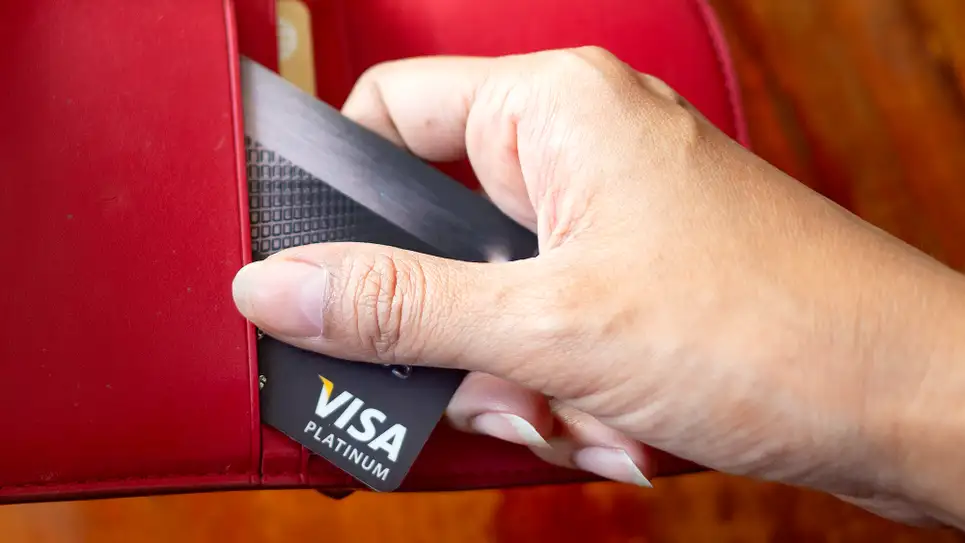

Visa Announces Cards Can Now Be Inserted, Swiped, Tapped, Bent, Clapped, Rolled, Shoved, Thrown, Dangled, Slid, Or Whacked
By Auly Dilone
SAN FRANCISCO—In an effort to make transactions “easier than ever,” financial services conglomerate Visa announced Wednesday that consumers could now insert, swipe, tap, bend, clap, roll, shove, throw, dangle, slide, or whack their cards to complete a purchase.
““Push it, bounce it, bash it, scratch it—using your Visa card has never been more fun or convenient,” said CEO Alfred Kelly, who encouraged customers to twirl, fondle, or even tickle their debit or credit card near a card reader the next time they were at a drugstore, supermarket, or other participating retailer.
“If you’d like to make your card perform a little dance across the card reader, be my guest. Feel free to chuck, slap, or slingshot your card. There’s no end to the new and exciting ways you can pay for goods and services with your Visa. Personally, I like to dropkick mine.” At press time, Kelly was demonstrating how customers could attach their card to a radio-controlled helicopter to crash it into the reader.
Continue reading at: https://www.theonion.com/visa-announces-cards-can-now-be-inserted-swiped-tappe-1848955679
11 Comments
-

Finn W
 3 min ago
3 min ago
I cant believe this...
-

Millie B
3 min ago
Is this real?!..
Angela C
I cant wait to slap my card